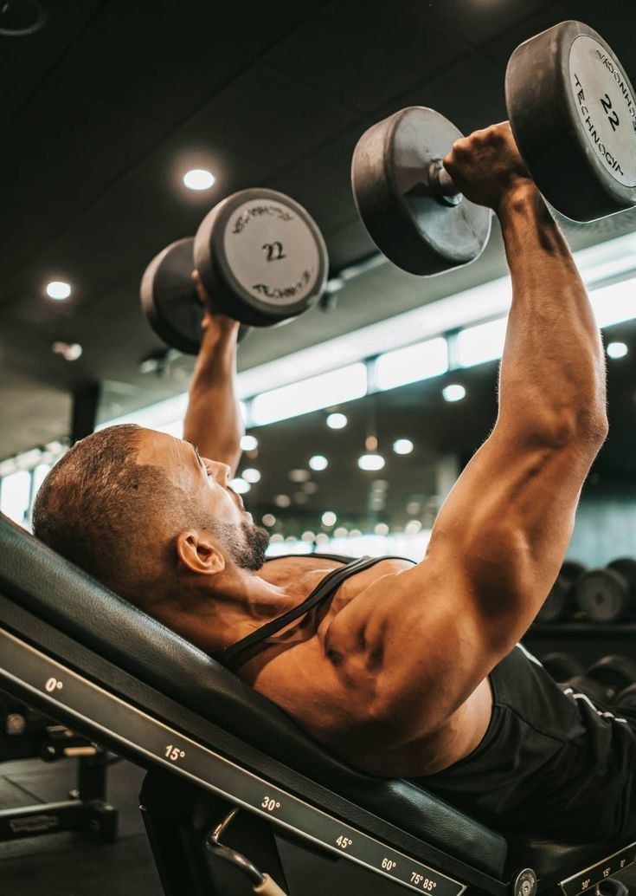
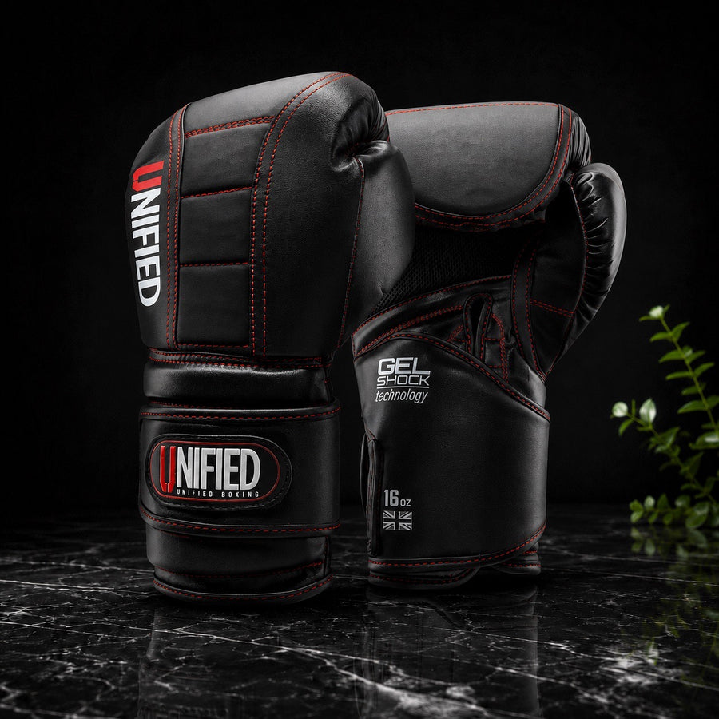

Musculación
Máquinas, pesas y mancuernas para ganar fuerza y masa muscular, en una sala equipada para todos los niveles.
Entrenamientos para todos los niveles, con guía profesional y a tu ritmo.

Máquinas, pesas y mancuernas para ganar fuerza y masa muscular, en una sala equipada para todos los niveles.
Cintas de correr y bicicletas para mejorar tu resistencia y mantener el corazón en forma.
Sesiones en grupo con circuitos para todo el cuerpo, guiadas por un instructor y con mucha energía.
Un entrenador que trabaja contigo de forma individual, con una rutina adaptada a tus objetivos.

Clases con saco y guantes, sin combate, para soltar el estrés y mejorar tu condición física.
Ejercicios con cargas ligeras y más repeticiones para definir el cuerpo y ganar firmeza. Ideal para empezar.
| Incluye | Básico | Plus | Premium |
|---|---|---|---|
| Precio mensual | 2 500 CUP | 3 500 CUP | 4 500 CUP |
| Musculación y cardio | Sí | Sí | Sí |
| Tonificación | Sí | Sí | Sí |
| Clases funcionales | No | Sí | Sí |
| Boxeo recreativo | No | Sí | Sí |
| Entrenamiento personal | No | No | 4 sesiones al mes |